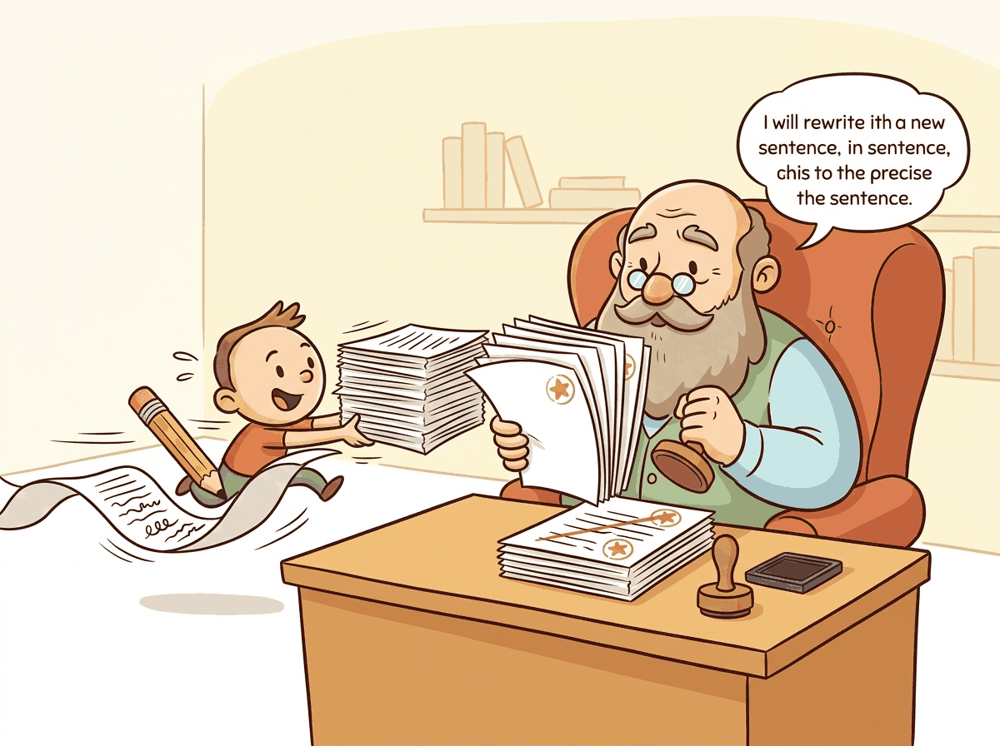

Speculative decoding is the computational equivalent of finishing someone's sentences: mostly right, occasionally embarrassing, but undeniably faster than waiting for them to say each word one at a time.
Quant AI Agent
Prerequisites
This section builds on the memory-bandwidth analysis from Section 9.2 (KV cache and the decode bottleneck) and the autoregressive decoding mechanics from Section 05.1. Familiarity with probability distributions and sampling from Section 05.2 is also helpful.
Breaking the one-token-at-a-time bottleneck. Autoregressive LLMs generate tokens sequentially, with each token requiring a full forward pass through the model. Since the decode phase is memory-bandwidth-bound (as we saw in Section 9.2), the GPU sits idle for most of each step. Speculative decoding exploits this idle compute by using a fast, lightweight "draft" model to propose multiple tokens at once, then verifying them all in a single forward pass of the full "target" model. Building on the memory-bandwidth analysis from Section 04.4 and the KV cache optimizations from Section 9.2, the key insight is that verification of $\gamma$ tokens costs roughly the same as generating one token, because the GPU is bottlenecked on reading weights, not on computation. When the draft model guesses correctly, you get multiple tokens for the price of one. When it guesses wrong, a rejection sampling scheme guarantees that the final output distribution matches the target model exactly.
Intuition: Think of speculative decoding like a junior writer drafting several paragraphs quickly, then handing them to a senior editor who reviews everything in one pass. The editor accepts most of the draft, fixes a few sentences, and the result is exactly what the editor would have written alone, just produced much faster because reviewing is cheaper than writing from scratch.
1. The Core Principle Basic

During standard autoregressive decoding, the GPU's compute units are roughly 99% idle, waiting for data to arrive from memory. Speculative decoding exploits this by giving the GPU actual work to do during that idle time. It is like realizing your taxi driver has been napping at every red light and suggesting they answer emails instead.
Speculative decoding exploits a fundamental asymmetry studied in computational complexity theory: verification is often cheaper than generation. This is the same principle underlying the P vs. NP question, the most famous open problem in computer science. In NP problems, checking a proposed solution is polynomially fast even though finding one may be exponentially hard. Speculative decoding applies an analogous asymmetry: generating tokens autoregressively is inherently serial (each depends on the previous), but verifying a batch of proposed tokens can be done in parallel because the target model processes them all in a single forward pass. The acceptance-rejection mechanism is borrowed from rejection sampling in statistics (von Neumann, 1951), guaranteeing that the output distribution is mathematically identical to what the target model would have produced alone. This is not an approximation; it is an exact sampling technique that trades extra computation for reduced wall-clock time.
Standard autoregressive generation produces one token per forward pass. For a model with N parameters and a batch size of 1, each decode step reads all N parameters from GPU memory but performs only $2N$ FLOPs (one multiply-add per parameter). On an H100 GPU with 3.35 TB/s memory bandwidth and 989 TFLOPS of FP16 compute, the theoretical maximum throughput is approximately 1,675 tokens/second for a 1B model, regardless of available compute. The GPU's compute units are almost entirely idle during decoding.
Speculative decoding fills this idle compute. The process has two phases:
- Draft phase: A fast model (the "draft" model, $M_{q}$) generates $\gamma$ candidate tokens autoregressively. Because this model is much smaller, it runs quickly. Draft models are often produced via knowledge distillation from the target model.
- Verify phase: The full target model ($M_{p}$) processes all $\gamma$ candidate tokens in a single forward pass, computing the target distribution for each position. A token-by-token acceptance/rejection step determines how many candidates to keep.
The critical property is that verification of $\gamma$ tokens in parallel has nearly the same latency as generating a single token, because the forward pass is dominated by memory bandwidth (reading model weights), and the weights are read once regardless of how many tokens are in the batch. The compute for $\gamma$ tokens is $\gamma$ times larger, but since the GPU has vast compute headroom during decoding, this extra work is essentially free.
Who: An inference optimization engineer at a cloud IDE company serving code completions to 50,000 concurrent developers.
Situation: Their code completion service used a 33B parameter model, achieving high quality but with a latency of 180ms per token during the decode phase, well above their 100ms target for perceived real-time performance.
Problem: Users expected completions to appear as they typed, but the 33B model's decode latency made multi-token suggestions feel sluggish. Switching to a smaller model degraded completion quality unacceptably.
Dilemma: Adding more GPUs to reduce per-user latency was economically unfeasible at their scale. They needed the 33B model's quality at the speed of a smaller model.
Decision: They implemented speculative decoding using a fine-tuned 1.3B draft model from the same model family, with a speculation length of 5 tokens.
How: The draft model was fine-tuned on the same code corpus as the target model to maximize acceptance rates. They integrated the draft-verify loop into their vLLM serving backend, with the draft and target models sharing the same GPU (the 1.3B model's memory footprint was negligible compared to the 33B model).
Result: Average tokens per verification step reached 3.8 (76% acceptance rate), yielding a 2.9x speedup in end-to-end generation latency. Per-token latency dropped from 180ms to 62ms, well under the 100ms target. GPU utilization increased from 15% to 48% during decoding.
Lesson: Speculative decoding is most effective when the draft model is from the same family or fine-tuned on the same domain as the target model, maximizing the acceptance rate and thus the speedup.
2. Acceptance and Rejection Sampling Advanced
The mathematical guarantee of speculative decoding is remarkable: the output distribution is identical to what the target model would produce on its own, despite using a different model for drafting. This guarantee comes from the acceptance/rejection sampling scheme introduced by Leviathan et al. (2023) and Chen et al. (2023).
Let $q(x)$ be the draft model's probability for token x, and let $p(x)$ be the target model's probability. (Note: the subscripts on the models $M_{q}$ and $M_{p}$ from Section 1 match these probability functions: $M_{q}$ produces distribution q, and $M_{p}$ produces distribution p.) For each draft token, proceeding left to right:
- Sample a uniform random number $r ~ U(0, 1)$
- If $r < \min(1, p(x) / q(x))$, accept the draft token
- Otherwise, reject it and resample from the adjusted distribution: $p'(x) = \max(0, p(x) - q(x)) / Z$, where Z is a normalization constant
- Once a token is rejected, discard all subsequent draft tokens and restart the draft phase from the resampled token
The intuition is straightforward. When the draft model assigns a lower probability than the target model ($q(x) < p(x)$), the token is always accepted because the ratio exceeds 1. When the draft model is overconfident relative to the target ($q(x) > p(x)$), the token is accepted proportionally to how close the distributions agree. The resampling distribution for rejected tokens compensates exactly for the accepted tokens, ensuring the overall output matches the target distribution.
Why exact distribution preservation is possible. This seems too good to be true: how can you get speedup with zero quality loss? The key is that speculative decoding does not change what the model computes; it changes how you schedule the computation. The target model still evaluates every token position. The draft model only determines the order in which positions are evaluated (speculatively, in batches, rather than one at a time). The rejection sampling mechanism is the mathematical correction that ensures any mistakes in the draft order do not leak into the final output. This is fundamentally different from quantization or pruning (covered in Sections 9.1 and 9.5), which modify the model itself. Speculative decoding modifies only the execution strategy.
Unlike most optimization techniques (quantization, pruning, distillation), speculative decoding introduces zero quality degradation. The output is sampled from exactly the same distribution as standard autoregressive decoding with the target model. The only thing that changes is the speed. This property makes speculative decoding uniquely attractive for applications where output quality cannot be compromised.
Why the Output Distribution Is Preserved (Informal Proof)
The claim that speculative decoding is lossless deserves a more careful argument. Consider a single position where the draft model proposes token x with probability $q(x)$. We want to show that the probability of outputting any token x from the combined accept/reject process equals $p(x)$.
There are two ways token x can be selected:
- Accepted from draft: The draft model generates x (probability $q(x)$) and we accept it (probability $\min(1, p(x)/q(x))$). Combined probability: $q(x) \cdot \min(1, p(x)/q(x)) = \min(q(x), p(x))$.
- Resampled after rejection: Any token $x'$ was drafted, rejected, and then x was drawn from the residual distribution $p'(x) = \max(0, p(x) - q(x)) / Z$. The total rejection probability is $Z = \sum _{x'} \max(0, q(x') - p(x'))$. The probability of reaching the resample step is Z, and the resample probability for x is $\max(0, p(x) - q(x)) / Z$. Combined: $\max(0, p(x) - q(x))$.
Adding these two paths: $\min(q(x), p(x)) + \max(0, p(x) - q(x)) = p(x)$. This identity holds for all tokens x and can be verified by considering two cases: when $q(x) \geq p(x)$ and when $q(x) < p(x)$. In both cases, the sum equals $p(x)$. Since each position is sampled exactly from p, the joint distribution of the entire generated sequence is identical to standard autoregressive sampling from the target model.
Expected Speedup
The expected number of accepted tokens per draft-verify cycle depends on the acceptance rate $\alpha$, which measures how well the draft model approximates the target. If each token is accepted independently with probability $\alpha$, the expected number of accepted tokens from $\gamma$ drafts follows a geometric-like distribution. The expected tokens per cycle is:
The wallclock speedup also depends on the relative cost of draft versus target forward passes. If the draft model takes time $c \cdot T$ (where T is the target model's decode latency and $c << 1$), then: Code Fragment 9.3.1 below puts this into practice.
# Example 1: Compute expected speedup for speculative decoding
import numpy as np
def expected_tokens(gamma: int, alpha: float) -> float:
"""Expected tokens per draft-verify cycle."""
return (1 - alpha ** (gamma + 1)) / (1 - alpha)
def speculative_speedup(gamma: int, alpha: float, cost_ratio: float) -> float:
"""
Wallclock speedup of speculative decoding.
Args:
gamma: number of draft tokens per cycle
alpha: per-token acceptance rate
cost_ratio: draft_time / target_time (e.g., 0.05 for 20x smaller model)
"""
e_tokens = expected_tokens(gamma, alpha)
cycle_cost = 1 + gamma * cost_ratio # 1 verify + gamma drafts
return e_tokens / cycle_cost
print(f"{'Gamma':>6} {'Alpha':>6} {'E[tokens]':>10} {'Speedup':>10}")
print("-" * 36)
for gamma in [3, 5, 8]:
for alpha in [0.5, 0.7, 0.85, 0.95]:
e_tok = expected_tokens(gamma, alpha)
spd = speculative_speedup(gamma, alpha, cost_ratio=0.05)
print(f"{gamma:>6} {alpha:>6.2f} {e_tok:>10.2f} {spd:>9.2f}x")If the acceptance rate is low (below 50%) or the draft model is not sufficiently cheap, speculative decoding can actually slow down generation. At α = 0.3 with γ = 5, the expected tokens per cycle is only 1.4, barely more than standard decoding, while the draft overhead adds latency. Speculative decoding also provides little benefit in high-throughput batch scenarios where the GPU is already compute-saturated from processing many sequences in parallel.
3. Draft Model Strategies Basic
The choice of draft model is the most important practical decision in speculative decoding. There are four main approaches, each with distinct tradeoffs:
3.1 Separate Small Model
The most straightforward approach: use a smaller model from the same family (e.g., Llama 3.1 8B as a draft for Llama 3.1 70B). The draft model runs on the same GPU and shares the vocabulary. Acceptance rates typically range from 60% to 85% depending on the task and temperature. The advantage is simplicity; the disadvantage is that it requires loading a separate model into GPU memory, reducing the memory available for KV cache and batching.
3.2 Self-Speculative (Layer Skipping)
Instead of a separate model, self-speculative decoding uses the target model itself with some layers skipped. DeepSeek V3's multi-token prediction heads (see Section 07.2) enable a related approach where the auxiliary prediction heads serve as a built-in draft mechanism. For example, a 70B model with 80 layers might skip every other layer during drafting, effectively running a 40-layer version. This eliminates the memory overhead of a separate draft model and often achieves higher acceptance rates because the draft shares the same weights. The technique was explored in Draft & Verify (Zhang et al., 2023) and subsequent work.
3.3 N-gram Lookup
For repetitive or templated text, an n-gram table built from the prompt or recent context can serve as an extremely fast "draft model" with zero compute cost. When the target model generates text that repeats patterns from the input (common in summarization, translation, and code completion), n-gram lookup achieves high acceptance rates. This approach is used in assisted generation in Hugging Face Transformers.
3.4 Retrieval-Based Drafting
Retrieval-based drafting extends the n-gram idea by searching a larger corpus for candidate continuations. REST (He et al., 2023) retrieves draft tokens from a datastore indexed by recent context. This is particularly effective for knowledge-heavy tasks where the target model frequently reproduces passages from its training data.
| Strategy | Extra Memory | Typical α | Best For |
|---|---|---|---|
| Separate small model | 1 to 8 GB | 0.60 to 0.85 | General purpose |
| Self-speculative | ~0 | 0.70 to 0.90 | Memory-constrained |
| N-gram lookup | Negligible | 0.30 to 0.95 (variable) | Repetitive/templated text |
| Retrieval-based | Datastore size | 0.50 to 0.80 | Knowledge-heavy tasks |
4. EAGLE: Feature-Level Speculation Advanced
EAGLE (Li et al., 2024) takes a fundamentally different approach to drafting. Instead of predicting tokens, EAGLE predicts hidden states (the feature vectors produced by the target model's layers). A lightweight autoregressive head sits on top of the target model's second-to-last layer and predicts the next token's feature vector, which is then projected to a token via the existing LM head.
The insight is that feature vectors are more predictable than tokens. Token prediction requires collapsing a high-dimensional distribution into a single discrete choice, while feature prediction operates in a continuous space where small errors are tolerable (the LM head can still produce the correct token from an approximately correct feature). EAGLE achieves acceptance rates of 0.75 to 0.90 across diverse tasks, consistently outperforming separate draft models.
Tree-Structured Verification
EAGLE also introduces tree-structured verification to evaluate multiple candidate continuations in parallel. Instead of drafting a single chain of $\gamma$ tokens, EAGLE drafts a tree of candidates, where each node branches into multiple possible next tokens. All paths through the tree are verified in a single forward pass using a specially constructed tree attention mask that prevents tokens on different branches from attending to each other.
With tree verification, a single forward pass evaluates 7 to 64 candidate nodes, and the longest accepted path through the tree determines how many tokens are produced. This significantly improves the expected tokens per cycle compared to single-chain speculation. EAGLE-2 further improves this with context-aware dynamic tree construction, adjusting the tree shape based on the draft model's confidence at each position.
Why tree verification is practically free. The key to understanding why tree verification adds minimal overhead is the memory-bandwidth bottleneck from Section 9.2. During a single decode step, the GPU must read all model weights from memory regardless of how many tokens it processes. Processing 1 token or 64 tokens requires reading the same weights; only the computation differs. Since modern GPUs have far more compute than memory bandwidth (a ratio of roughly 100:1 on the H100), evaluating 64 tree nodes costs almost the same wall-clock time as evaluating 1. This is the fundamental asymmetry that makes all speculative decoding methods work. The same asymmetry explains why batching is so effective for throughput in the serving frameworks discussed in Section 9.4.
5. Medusa: Multi-Head Prediction Advanced
Medusa (Cai et al., 2024) takes yet another approach. Instead of a separate draft model, Medusa adds multiple prediction heads on top of the target model's last hidden layer. Each head predicts a future token at a different offset: head 1 predicts the next token (position $t+1$), head 2 predicts $t+2$, head 3 predicts $t+3$, and so on.
During generation, all heads produce predictions simultaneously (since they share the same hidden state from the most recent forward pass). The top candidates from each head are combined into a tree of candidate sequences, and tree-structured verification determines the longest accepted path. The Medusa heads are lightweight (typically a single linear layer each) and add minimal overhead to the forward pass. Code Fragment 9.3.2 below puts this into practice.
# Example 2: Simulating Medusa-style multi-head prediction
import torch
import torch.nn as nn
class MedusaHeads(nn.Module):
"""Simplified Medusa prediction heads on top of a language model."""
def __init__(self, hidden_size: int, vocab_size: int, num_heads: int = 4):
super().__init__()
self.num_heads = num_heads
# Each head predicts token at a different future position
# head_k predicts token at position t+k+1
self.heads = nn.ModuleList([
nn.Sequential(
nn.Linear(hidden_size, hidden_size),
nn.SiLU(),
nn.Linear(hidden_size, vocab_size),
)
for _ in range(num_heads)
])
def forward(self, hidden_states: torch.Tensor):
"""
Args:
hidden_states: (batch, seq_len, hidden_size) from last layer
Returns:
List of logits, one per head: [(batch, seq_len, vocab_size), ...]
"""
return [head(hidden_states) for head in self.heads]
# Simulated example
hidden_size, vocab_size, num_heads = 4096, 32000, 4
medusa = MedusaHeads(hidden_size, vocab_size, num_heads)
# Simulate hidden state from last token position
hidden = torch.randn(1, 1, hidden_size)
predictions = medusa(hidden)
# Each head gives a distribution over the vocabulary
for i, logits in enumerate(predictions):
top5 = torch.topk(logits[0, 0], k=5)
print(f"Head {i+1} (position t+{i+1}): "
f"top tokens = {top5.indices.tolist()}, "
f"probs = {torch.softmax(top5.values, dim=0).tolist()}")
total_params = sum(p.numel() for p in medusa.parameters())
print(f"\nMedusa heads parameters: {total_params / 1e6:.1f}M "
f"(vs. ~8B for Llama 3.1 8B base)")Medusa requires fine-tuning the extra heads on representative data, which adds a training step. However, it requires no separate draft model and no additional memory for draft KV cache. EAGLE, in contrast, also requires training the feature prediction head, but achieves higher acceptance rates because feature-level prediction is inherently more accurate than direct token prediction at distant positions. In published benchmarks, EAGLE-2 typically achieves 3x to 4x speedup while Medusa achieves 2x to 3x.
6. Practical Implementation Intermediate
From-Scratch Implementation
To build intuition for the draft-verify-resample loop, here is a complete pedagogical implementation using two GPT-2 models. The small model drafts tokens; the large model verifies them using the acceptance criterion from Section 2. Code Fragment 9.3.3 below puts this into practice.
# Example 3: From-scratch speculative decoding with GPT-2
import torch
from transformers import AutoModelForCausalLM, AutoTokenizer
def speculative_decode(target, draft, input_ids, gamma=5, max_tokens=40):
"""
Speculative decoding from scratch.
target: large model, draft: small model, gamma: draft length.
"""
generated = input_ids.clone()
while generated.shape[1] - input_ids.shape[1] < max_tokens:
# --- Draft phase: generate gamma tokens with the small model ---
draft_input = generated.clone()
draft_probs_list = []
for _ in range(gamma):
# Disable gradient tracking for faster inference
with torch.no_grad():
logits = draft(draft_input).logits[:, -1, :]
probs = torch.softmax(logits, dim=-1)
token = torch.multinomial(probs, 1)
draft_probs_list.append(probs)
draft_input = torch.cat([draft_input, token], dim=1)
draft_tokens = draft_input[:, generated.shape[1]:] # (1, gamma)
# --- Verify phase: score all draft tokens in one target pass ---
verify_input = torch.cat([generated, draft_tokens], dim=1)
with torch.no_grad():
target_logits = target(verify_input).logits
# Extract target probs at each draft position
start = generated.shape[1] - 1 # position before first draft
n_accepted = 0
for i in range(gamma):
target_probs = torch.softmax(target_logits[:, start + i, :], dim=-1)
q = draft_probs_list[i]
x = draft_tokens[:, i]
p_x = target_probs[0, x[0]]
q_x = q[0, x[0]]
# Accept with probability min(1, p/q)
accept_prob = min(1.0, (p_x / q_x).item())
if torch.rand(1).item() < accept_prob:
n_accepted += 1
else:
# Reject: resample from max(0, p - q), normalized
residual = torch.clamp(target_probs[0] - q[0], min=0)
residual = residual / residual.sum()
resampled = torch.multinomial(residual.unsqueeze(0), 1)
generated = torch.cat([generated, draft_tokens[:, :i], resampled], dim=1)
break
else:
# All gamma tokens accepted; sample one bonus token from target
bonus_probs = torch.softmax(target_logits[:, start + gamma, :], dim=-1)
bonus = torch.multinomial(bonus_probs, 1)
generated = torch.cat([generated, draft_tokens, bonus], dim=1)
continue
continue # restart loop after rejection
return generated
# Run it
tokenizer = AutoTokenizer.from_pretrained("gpt2")
# Load pretrained causal LM (decoder-only architecture)
target = AutoModelForCausalLM.from_pretrained("gpt2-medium")
draft_model = AutoModelForCausalLM.from_pretrained("gpt2")
# Set model to eval mode (disables dropout, freezes batch norm)
target.eval(); draft_model.eval()
prompt = "The key idea behind speculative decoding is"
ids = tokenizer(prompt, return_tensors="pt").input_ids
out = speculative_decode(target, draft_model, ids, gamma=4, max_tokens=30)
print(tokenizer.decode(out[0], skip_special_tokens=True))Try changing gamma from 2 to 8 and observe how the acceptance rate changes. With a closer draft/target pair, higher gamma values produce more accepted tokens per cycle. You can also swap in gpt2-large as the target to see how a larger gap between draft and target affects acceptance rates.
Using Library APIs
Both Hugging Face Transformers and vLLM support speculative decoding out of the box. Below is a practical example using Hugging Face's assisted_generation interface, which implements speculative decoding with a user-provided draft model.
# Example 3: Speculative decoding with Hugging Face Transformers
from transformers import AutoModelForCausalLM, AutoTokenizer
import torch, time
# Load target and draft models
target_name = "meta-llama/Llama-3.1-8B-Instruct"
draft_name = "meta-llama/Llama-3.2-1B-Instruct"
tokenizer = AutoTokenizer.from_pretrained(target_name)
target = AutoModelForCausalLM.from_pretrained(
target_name, torch_dtype=torch.float16, device_map="auto"
)
draft = AutoModelForCausalLM.from_pretrained(
draft_name, torch_dtype=torch.float16, device_map="auto"
)
prompt = "Explain how a CPU cache works in three sentences."
inputs = tokenizer(prompt, return_tensors="pt").to(target.device)
max_new = 128
# Standard autoregressive decoding
torch.cuda.synchronize()
t0 = time.perf_counter()
out_standard = target.generate(**inputs, max_new_tokens=max_new, do_sample=False)
torch.cuda.synchronize()
standard_time = time.perf_counter() - t0
# Speculative decoding (assisted generation)
torch.cuda.synchronize()
t0 = time.perf_counter()
out_speculative = target.generate(
**inputs,
max_new_tokens=max_new,
do_sample=False,
assistant_model=draft, # the draft model
)
torch.cuda.synchronize()
spec_time = time.perf_counter() - t0
n_tokens = out_standard.shape[1] - inputs["input_ids"].shape[1]
print(f"Generated {n_tokens} tokens")
print(f"Standard: {standard_time:.2f}s ({n_tokens/standard_time:.1f} tok/s)")
print(f"Speculative: {spec_time:.2f}s ({n_tokens/spec_time:.1f} tok/s)")
print(f"Speedup: {standard_time/spec_time:.2f}x")
print(f"\nOutputs match: {torch.equal(out_standard, out_speculative)}")Notice that torch.equal(out_standard, out_speculative) returns True. With greedy decoding (do_sample=False), speculative decoding always produces the exact same tokens as standard decoding. With sampling (do_sample=True), the outputs are sampled from the same distribution, so they will differ between runs but remain statistically indistinguishable.
7. When Speculative Decoding Helps (and When It Does Not) Advanced
Speculative decoding is not a universal speedup. Its effectiveness depends on several factors:
Best scenarios:
- Latency-sensitive, single-request serving: When serving one request at a time (batch size 1), the GPU is massively underutilized during decoding. Speculative decoding fills this idle compute.
- High acceptance rate tasks: Code completion, formulaic text, and continuation of structured outputs tend to have high acceptance rates because the draft model's predictions closely align with the target's.
- Large target models: The bigger the target model, the more memory-bandwidth-bound the decode phase, and the more "free" compute is available for verification.
Poor scenarios:
- High-throughput batched serving: When the batch size is large, the GPU is already utilizing its compute. The extra compute for tree verification competes with useful work, reducing or eliminating the benefit.
- Creative/high-temperature generation: With high temperature, the draft model's predictions become less reliable, lowering acceptance rates.
- Short outputs: The overhead of loading and running the draft model amortizes poorly when only a few tokens are generated.
| Scenario | Typical Speedup | Acceptance Rate |
|---|---|---|
| Code completion (greedy) | 2.5x to 3.5x | 80% to 90% |
| General chat (temp=0.7) | 1.5x to 2.5x | 60% to 75% |
| Creative writing (temp=1.0) | 1.2x to 1.8x | 45% to 60% |
| Batch=32 high throughput | 1.0x to 1.2x | Variable |
A growing family of approaches eliminates the need for a separate draft model entirely. LayerSkip (Meta, 2024) uses early exit from the target model itself as the draft, skipping later layers during the draft phase. SPEED uses early layers with a lightweight head for drafting. These "draft-free" methods reduce memory overhead to near zero and avoid the complexity of training or maintaining a separate draft model, at the cost of somewhat lower acceptance rates compared to a well-matched separate draft model.
Draft models for speculative decoding are often produced through knowledge distillation, where a small model is trained to mimic the larger target model's output distribution. This connection runs deep: distillation produces draft models with high acceptance rates precisely because they are trained to match the target. See Section 07.3 for how DeepSeek used distillation to create a family of smaller reasoning models from R1.
Check Your Understanding
1. Why does speculative decoding produce the exact same distribution as standard autoregressive decoding?
Show Answer
2. With γ = 5 draft tokens and an acceptance rate of 0.85, what is the expected number of tokens produced per draft-verify cycle?
Show Answer
3. Why does EAGLE achieve higher acceptance rates than a separate small draft model?
Show Answer
4. In which scenario would speculative decoding provide the least benefit, and why?
Show Answer
Always enable KV caching during inference. Without it, the model recomputes attention for all previous tokens at every step, making generation O($n^{2}$) instead of O(n). In most frameworks, this is on by default, but verify it in custom implementations.
Key Takeaways
- Speculative decoding exploits idle GPU compute during memory-bandwidth-bound decoding by drafting multiple tokens with a fast model and verifying them in a single target forward pass.
- The acceptance/rejection scheme is mathematically lossless: the output distribution matches the target model exactly, unlike quantization or pruning.
- Expected speedup depends on acceptance rate α and draft cost ratio. At α = 0.85 with γ = 5, expect roughly 3.5x to 4x latency reduction for single requests.
- Draft model strategies include separate small models, self-speculative (layer skipping), n-gram lookup, and retrieval-based approaches, each suited to different deployment scenarios.
- EAGLE predicts hidden states instead of tokens and uses tree-structured verification, achieving 3x to 4x speedup with higher acceptance rates than token-level drafting.
- Medusa adds lightweight prediction heads to the target model for parallel multi-position drafting, avoiding the need for a separate model entirely.
- Speculative decoding is most effective for latency-sensitive, single-request scenarios with large target models. It provides diminishing returns at high batch sizes where the GPU is already compute-saturated.
Speculative decoding for reasoning models. Reasoning models like o1 and DeepSeek-R1 generate thousands of thinking tokens before producing a response, making them prime candidates for speculative decoding. EAGLE-2 (2024) improves acceptance rates through context-aware dynamic draft lengths. CLLMs (Consistency Large Language Models) enable parallel decoding by training models to produce stable outputs across multiple Jacobi iteration steps. Meanwhile, hardware-aware speculation adapts draft strategies to the specific memory bandwidth and compute characteristics of the deployment hardware, maximizing throughput across different GPU generations.
Exercises
Why is the KV-cache the primary memory bottleneck during LLM inference, and why does this bottleneck get worse with longer context windows and larger batch sizes?
Answer Sketch
During autoregressive generation, the model must attend to all previous tokens. The KV-cache stores the key and value vectors for every token, every layer, and every head. Memory scales as: batch_size * num_layers * 2 * num_heads * head_dim * seq_len * bytes_per_element. This grows linearly with both sequence length and batch size. For a 70B model with 128K context: KV-cache can require 40+ GB per request, while the model weights are ~140 GB. With even a small batch of 8 requests, KV-cache needs 320+ GB, far exceeding the model weight memory.
vLLM uses PagedAttention, inspired by virtual memory in operating systems. Explain the analogy: what is the 'page', what is the 'page table', and what problem does paging solve for LLM KV-cache management?
Answer Sketch
In traditional KV-cache management, each request gets a contiguous memory block sized for the maximum sequence length. This wastes memory when requests are shorter. PagedAttention divides KV-cache into fixed-size blocks (pages, e.g., 16 tokens each). A page table maps logical token positions to physical memory blocks. As a request generates tokens, new pages are allocated on demand. When a request finishes, pages are freed and reused. This solves memory fragmentation and over-allocation: memory usage matches actual sequence length, not maximum length. This is exactly how OS virtual memory manages RAM, and it enables 2 to 4x more concurrent requests.
LLaMA 2 70B uses GQA with 8 KV heads shared across 64 query heads. Calculate the KV-cache reduction compared to standard MHA (64 KV heads). How does this affect maximum batch size at a fixed memory budget of 80 GB?
Answer Sketch
Standard MHA KV-cache per token per layer: 2 * 64 * 128 * 2 bytes = 32 KB. GQA KV-cache per token per layer: 2 * 8 * 128 * 2 bytes = 4 KB. Reduction: 8x. For 80 layers and 4096 tokens: MHA = 32 KB * 80 * 4096 = 10 GB per request. GQA = 4 KB * 80 * 4096 = 1.25 GB per request. At 80 GB budget (after model weights): MHA allows ~8 concurrent requests; GQA allows ~64 concurrent requests. This 8x increase in batch size translates directly to 8x higher throughput for the same hardware.
Quantizing the KV-cache from FP16 to INT8 or INT4 reduces memory by 2 to 4x. Why is KV-cache quantization different from weight quantization, and what quality tradeoffs are involved?
Answer Sketch
Weight quantization is applied once to static values; KV-cache values are dynamic and change with every input. KV-cache quantization must: (1) quantize on-the-fly (adding latency per token). (2) Handle the wide dynamic range of attention key/value vectors (outlier values are common). (3) Potentially dequantize for attention computation accuracy. The quality tradeoff: KV-cache quantization to INT8 typically has negligible impact (<0.5% on benchmarks), but INT4 can cause 2 to 5% degradation because attention is more sensitive to key/value precision than the rest of the network. The memory savings are significant: for a batch of 32 requests with 4096 tokens, INT4 KV-cache saves ~30 GB compared to FP16.
Implement a simple prefix cache that detects when multiple requests share the same system prompt and reuses the KV-cache for the shared prefix. Measure the latency improvement when 10 requests share a 500-token system prompt.
Answer Sketch
Store the KV-cache for the system prompt keyed by its token hash. For subsequent requests with the same system prompt, copy (or reference) the cached KV tensors instead of recomputing. Expected improvement: the prefill for the shared 500 tokens is eliminated (~100ms saved per request on a 7B model). For long shared prefixes (e.g., a 4000-token document that multiple questions reference), the savings are substantial: 4000 tokens of prefill (~0.5 to 1 second) saved per request. vLLM and SGLang implement this as 'automatic prefix caching' with hash-based deduplication.
What Comes Next
In the next section, Section 9.4: Serving Infrastructure, we cover serving infrastructure including batching strategies, load balancing, and production deployment patterns.
Leviathan, Y., Kalman, M. & Matias, Y. (2023). "Fast Inference from Transformers via Speculative Decoding." ICML 2023.
One of the two concurrent papers establishing speculative decoding. Proves that draft-then-verify produces outputs identical to standard sampling using a rejection scheme. Essential reading for understanding why speculative decoding is lossless.
Chen, C. et al. (2023). "Accelerating Large Language Model Decoding with Speculative Sampling." arXiv preprint arXiv:2302.01318.
The DeepMind companion paper to Leviathan et al., independently deriving the speculative sampling algorithm. Provides complementary analysis of acceptance rates and practical speedup factors across model sizes.
Li, Y. et al. (2024). "EAGLE: Speculative Sampling Requires Rethinking Feature Uncertainty." ICML 2024.
Trains a lightweight auto-regressive head on the target model's hidden states rather than using a separate draft model. Achieves higher acceptance rates than traditional two-model approaches while requiring minimal additional parameters.
Cai, T. et al. (2024). "Medusa: Simple LLM Inference Acceleration Framework with Multiple Decoding Heads." ICML 2024.
Adds multiple parallel prediction heads to the target model itself, generating draft candidates without a separate draft model. Combines tree-based verification with a simple training recipe, making it easy to integrate into existing deployments.
Miao, X. et al. (2024). "SpecInfer: Accelerating Large Language Model Serving with Tree-based Speculative Inference and Verification." ASPLOS 2024.
Extends speculative decoding to tree-structured draft sequences verified in parallel, increasing the expected number of accepted tokens per verification step. Includes a complete serving system design with batch-level optimizations.
Sun, Z. et al. (2024). "TriForce: Lossless Acceleration of Long Sequence Generation with Hierarchical Speculative Decoding." arXiv preprint arXiv:2404.11912.
Introduces a hierarchical speculation pipeline tailored for long contexts, using compressed KV caches to accelerate draft generation. Particularly relevant for applications requiring both long context windows and low latency.